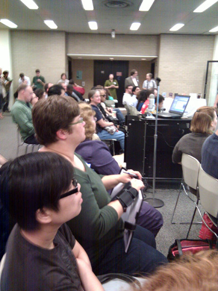
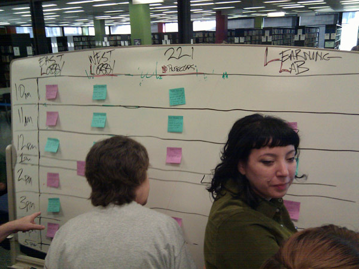
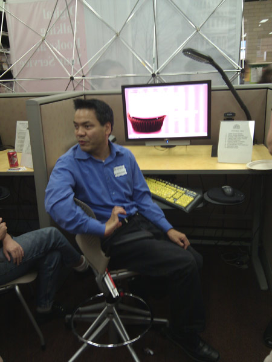

2nd Annual Accessibility Camp DC

Last October was the first ever Accessibility Camp DC. I learned a lot from the talks last year and had my eyes opened by how the blind navigate the web. This year, on October 9th, I took what I learned and gave a presentation of my own.

Titled “Building An Accessible Site from the Ground Up” my talk was about making a website accessible from a developers point of view. The audience’s reaction was positive and there were many good questions raised.
Local PHP developers Andrew Nacin (core contributor to WordPress.org) and Aaron Jorbin (Clearspring Technologies) sat in on my talk. The two were adding accessibility-related patches to WordPress while I was presenting. This is why I love the WordPress community! Afterwards I got to talk with them about WordPress geekiness even though I saw them a couple of weeks ago at WordPress Mid-Atlantic. They even introduced me to another DC-area hacker, Greg Linch, who is passionate about journalism and education.

Lunch was sponsored by Adobe and delicious. While people were munching on sandwiches, Jennison Asuncion demonstrated screen-reading software JAWS and how it works with websites. Like last year, there were many people who were just flabbergasted by what they saw. It’s one thing to read about accessibility issues online, it’s another to see it live, in-person.
After lunch I saw a demonstration of FireEyes, a Firebug plugin, to uncover accessibility issues from Karl Groves. The neat thing about the free plugin is, it will detect problems on AJAX events that load new data onto the page without refreshing page.
I also sat in on a talk about adding ARIA live regions to help screenreaders announce dynamic changes on the page such as using AJAX. These techniques are simple to implement and seeing someone demonstrate their advantages really motivates me to incorporate them into my projects.
Mark Barlet from AbleGamers.com was there all day showing off videos games that are accessible. These games run on modern hardware like the Xbox 360 but have special modifications so people with disabilities could be competitive. One game was an audio only game where you’re a monster trying to eat victims that fall into your pit. There are no graphics, mainly because the game designer isn’t a graphic designers. Instead you listen to audible clues about where your next victim is and when you are close enough you press a button to eat them. The game works really well with stereo headphones to help you orient yourself. Other things on display were a racing game that you can control with your face and a sip and puff tube attached to a controller to control a character on-screen. If you’re into accessible gaming controllers, check out episode 1 of the Ben Heck Show on Revision 3.
After the conference a bunch of us headed to Capital City Brewing Company for some food and continued geeky conversation. There were a lot of people from out-of-town and it was good to get to know them. I met Elle Waters from Louisville, Kentucky; Pratik Patel from New York; and Cliff Tyllick from Austin, Texas. It was a great end to a great day of accessibility.
Other Coverage of Accessibility Camp DC 2010
- Aaron Jorbin
- NextGenWeb.org
- Official Twitter hashtag: #a11ydc
- List of Attendees